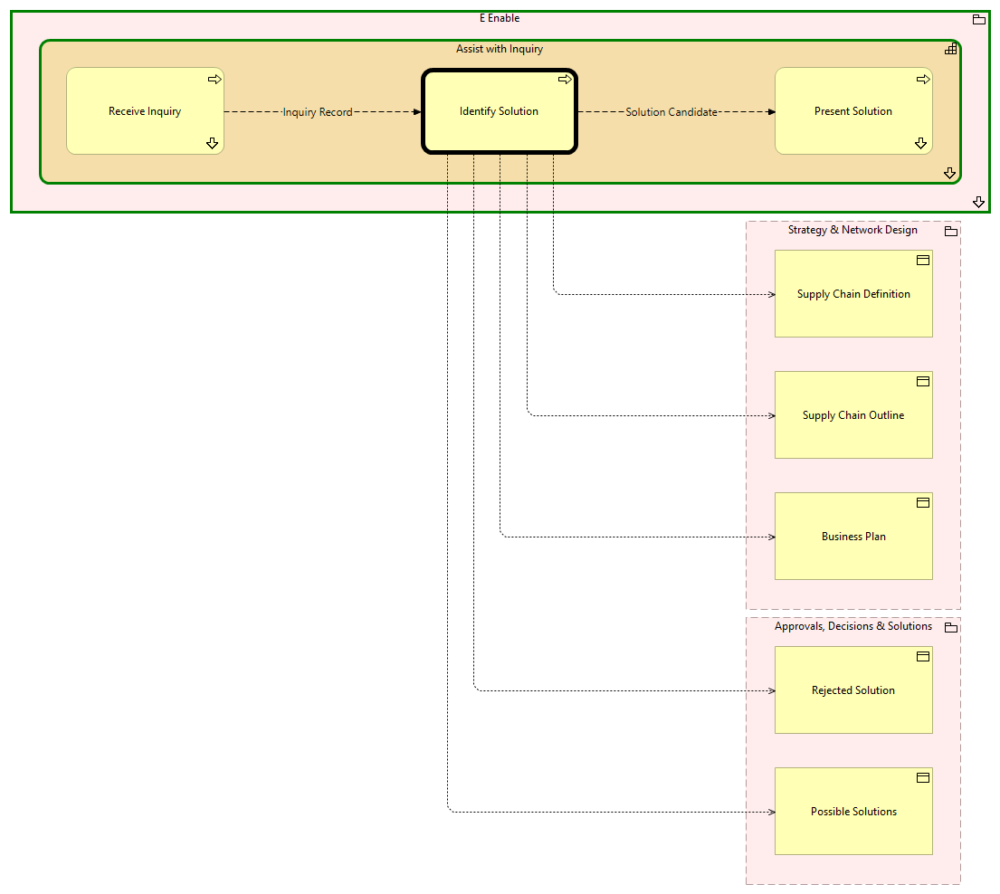

Identify Solution - Context
(
)

generated_by
build_archi_xml.py::gen_proc_node_context_view
generator_path
pedro/capabilities/build_archi_xml_assign/build_archi_xml_assign.py
run_at
2026-10-19T21:03:58
view_type
process_context
E Enable
Assist with Inquiry
Present Solution
Present Solution - Context
Receive Inquiry
Receive Inquiry - Context
Identify Solution
Assist with Inquiry - Processes
E Enable - Processes
Strategy & Network Design
Business Plan
Supply Chain Outline
Supply Chain Definition
Approvals, Decisions & Solutions
Possible Solutions
Rejected Solution
Inquiry Record
Receive Inquiry
Identify Solution
Solution Candidate
Identify Solution
Present Solution
Identify Solution
Business Plan
Identify Solution
Supply Chain Outline
Identify Solution
Possible Solutions
Identify Solution
Supply Chain Definition
Identify Solution
Rejected Solution